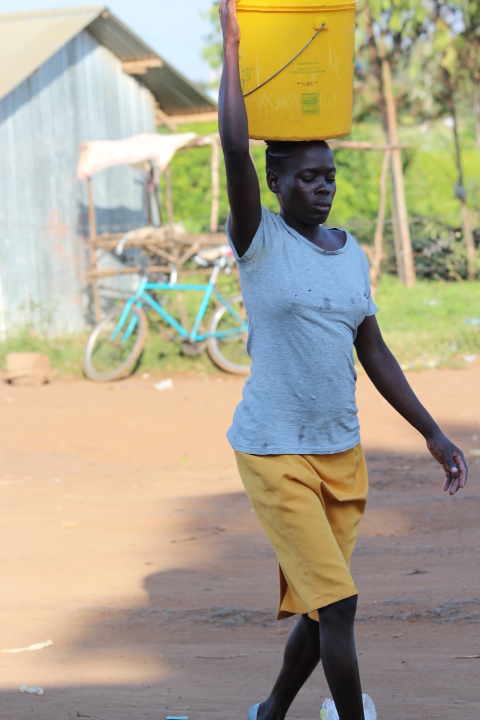
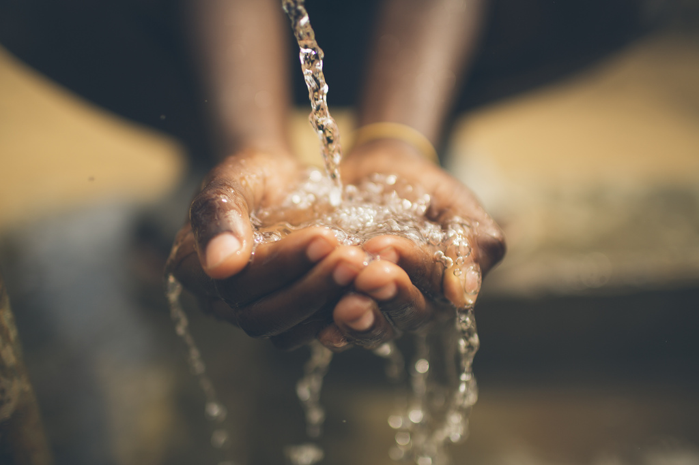
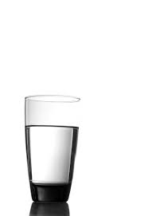
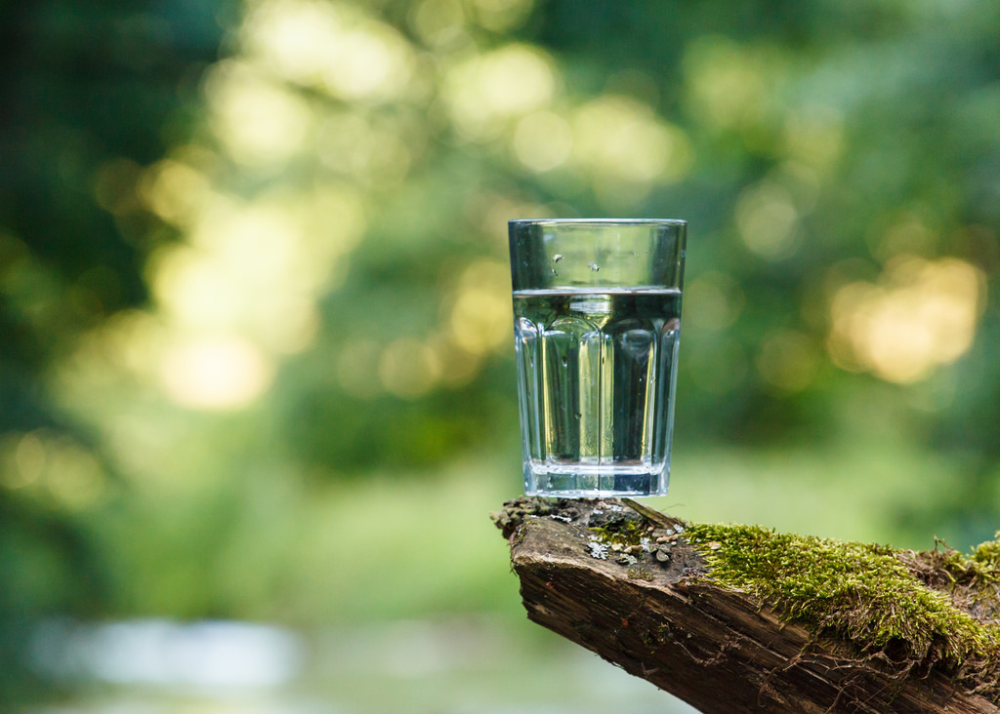

The Issue
Clean, drinkable water is a necessity for all human beings. But in some areas, water can be unclean, too far away, or even rare. Many people in third-world countries have very little drinkable water. Some have to walk miles to get their water, and even then, it's usually not safe to drink.
What Can We Do to Help?
We all can pitch in to help people in these dry areas by supporting oranizations such as Water is Life Kenya, Charity: Water, and Three Avocados. If we all do our part, people in developing countries can have clean, running water.
   Organizations To Donate To
- Water is Life Kenya
- Charity: Water
- Three Avocados
- Planet Water Foundation
- Generosity.org